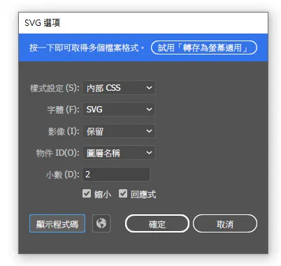

前言
SVG是一種向量圖格式，最大的優點就是縮放大小都不會模糊，常見的網頁icon幾乎都是以SVG的格式做呈現。
- 不希望圖片失真
- 不想要自己用css手刻一個簡單形狀或複雜的圖形
- 想讓圖片檔案更小
- 會常常想修改圖片某一部分如背景、填滿顏色
哪些時候會用到SVG?
- 需要額外學習一些語法與了解含意
使用SVG的缺點
SVG語法介紹
SVG的語法不多，甚至可以讓電腦幫我們自動產出程式碼，不過還是對常見語法要有了解才方便修改編輯。
- rect
- circle
- line
- polygon
- text
方形參數有x y(第一個座標)、width(寬度)、height(高度)等
圓形參數有cx(X座標)、cy(Y座標)、r(半徑)等
線段參數有x1(第一個起始點)y1(第一個結束點)、x2(第二個起始點)y2(第二個結束點)、stroke(線框顏色)等
多邊形參數有points(x,y為一組座標)、fill(填滿效果)等
文字參數有x(x座標)、y(y座標)、font-size(字體尺寸)、font-weight(字體粗細)
以上四種是最常見的語法更多標籤如polyline、path通常會選擇讓程式產生或可以參考卡斯伯-SVG超硬派了解，每一種語法內都有各自參數要填入才會構成SVG圖示，在HTML上直接使用svg語法時需要包含在SVG標籤內，以下是一段SVG程式碼與作用註解。
-
//紅色邊框線svg畫布設定350寬度300高度上下外距10px <svg width="350" height="300" style="border: 1px solid rgb(255, 0, 0); margin:10px 0"> //方形 <rect x="20" y="50 " width="100" height="100" fill="rgb(255,255,0)" stroke="rgb(0,0,0)" stroke-width="2"></rect> //圓形 <circle cx="200" cy="70" r="50" fill="rgb(171, 248, 71)" stroke="rgb(255,255,255)" stroke-width="10"></circle> //三角形 <polygon points="140,140,140,280,280,280" fill="#3cd8ff" stroke="rgb(0,0,0)" stroke-width="3"></polygon> //常見的漢堡條選單 <line x1="70" y1="210" x2="100" y2="210" stroke="rgb(0,0,0)" stroke-width="4"></line> <line x1="70" y1="220" x2="100" y2="220" stroke="rgb(0,0,0)" stroke-width="4"></line> <line x1="70" y1="230" x2="100" y2="230" stroke="rgb(0,0,0)" stroke-width="4"></line> //文字 <text x="200" y="160" font-size="28px" font-weight="900">簡單的SVG</text> <text x="200" y="190" font-size="28px" font-weight="900">圖示使用</text> </svg>
icon
當然，想要繪製出更精細的形狀是不可能一個點一個點去算的，因此在使用icon圖示時可以參考Bootstrap icon，內含超過1500種常見的icon圖示，常見的三種使用方式有:
- 直接複製SVG語法貼上
- 下載svg圖檔用img的方式插入
- 使用網站提供的font方式貼上class使用(需使用CDN或import的方式導入檔案)
也可以自行使用軟體程式產出svg如Adobe Illustrator，儲存的方式選擇svg檔案。
就會產出以下這種程式碼
-
<svg id="layer_1" data-name="layer 1" xmlns="http://www.w3.org/2000/svg" viewBox="0 0 221.51 227.14"><defs><style>.cls-1{isolation:isolate;font-size:12px;font-family:AdobeMingStd-Light-B5pc-H, Adobe Ming Std;}.cls-2,.cls-3{fill:none;stroke-miterlimit:10;}.cls-2{stroke:red;stroke-width:3px;}.cls-3{stroke:#000;stroke-width:2px;}</style></defs><title>1</title><g id="layer_1-2" data-name="layer 1"><text class="cls-1" transform="translate(104.95 10.56)">12</text><text class="cls-1" transform="translate(162.55 23.39)">1</text><text class="cls-1" transform="translate(201.28 61.25)">2</text><text class="cls-1" transform="translate(215.48 117.78)">3</text><text class="cls-1" transform="translate(200.27 172.76)">4</text><text class="cls-1" transform="translate(164.24 212.95)">5</text><text class="cls-1" transform="translate(107.52 225.69)">6</text><text class="cls-1" transform="translate(53.5 213.07)">7</text><text class="cls-1" transform="translate(14.56 172.84)">8</text><text class="cls-1" transform="translate(0 117.43)">9</text><text class="cls-1" transform="translate(9.66 62.86)">10</text><text class="cls-1" transform="translate(48.2 23.65)">11</text><line class="cls-2" x1="111.2" y1="15.51" x2="111.2" y2="28.51"/><line class="cls-2" x1="62.1" y1="28.41" x2="68.6" y2="39.61"/><line class="cls-2" x1="26.1" y1="64.11" x2="37.3" y2="70.61"/><line class="cls-2" x1="12.7" y1="113.01" x2="25.7" y2="113.01"/><line class="cls-2" x1="24.6" y1="163.11" x2="35.8" y2="156.61"/><line class="cls-2" x1="61.3" y1="199.11" x2="67.8" y2="187.91"/><line class="cls-2" x1="110.2" y1="212.51" x2="110.2" y2="199.51"/><line class="cls-2" x1="160.3" y1="199.61" x2="153.8" y2="188.41"/><line class="cls-2" x1="197.3" y1="163.91" x2="186.1" y2="157.41"/><line class="cls-2" x1="210.9" y1="113.51" x2="197.9" y2="113.51"/><line class="cls-2" x1="196.8" y1="63.91" x2="185.6" y2="70.41"/><line class="cls-2" x1="161.1" y1="27.91" x2="154.6" y2="39.11"/><line class="cls-3" x1="100.4" y1="15.01" x2="101.2" y2="23.01"/><line class="cls-3" x1="90.1" y1="16.71" x2="91.8" y2="24.51"/><line class="cls-3" x1="80.1" y1="19.31" x2="82.6" y2="27.01"/><line class="cls-3" x1="70.4" y1="23.11" x2="73.7" y2="30.41"/><line class="cls-3" x1="52.5" y1="33.41" x2="57.2" y2="39.91"/><line class="cls-3" x1="44.5" y1="39.91" x2="49.8" y2="45.91"/><line class="cls-3" x1="37.1" y1="47.31" x2="43.1" y2="52.61"/><line class="cls-3" x1="30.6" y1="55.31" x2="37.1" y2="60.01"/><line class="cls-3" x1="20.3" y1="73.21" x2="27.6" y2="76.51"/><line class="cls-3" x1="16.5" y1="82.91" x2="24.2" y2="85.41"/><line class="cls-3" x1="13.9" y1="92.91" x2="21.7" y2="94.61"/><line class="cls-3" x1="12.2" y1="103.21" x2="20.2" y2="104.01"/><line class="cls-3" x1="12.2" y1="123.81" x2="20.2" y2="123.01"/><line class="cls-3" x1="13.9" y1="134.11" x2="21.7" y2="132.41"/><line class="cls-3" x1="16.5" y1="144.11" x2="24.2" y2="141.61"/><line class="cls-3" x1="20.3" y1="153.81" x2="27.6" y2="150.51"/><line class="cls-3" x1="30.6" y1="171.71" x2="37.1" y2="167.01"/><line class="cls-3" x1="37.1" y1="179.71" x2="43.1" y2="174.41"/><line class="cls-3" x1="44.5" y1="187.11" x2="49.8" y2="181.11"/><line class="cls-3" x1="52.5" y1="193.61" x2="57.2" y2="187.11"/><line class="cls-3" x1="70.4" y1="203.91" x2="73.7" y2="196.61"/><line class="cls-3" x1="80.1" y1="207.71" x2="82.6" y2="200.01"/><line class="cls-3" x1="90.1" y1="210.31" x2="91.8" y2="202.51"/><line class="cls-3" x1="100.4" y1="212.01" x2="101.2" y2="204.01"/><line class="cls-3" x1="121" y1="213.01" x2="120.2" y2="205.01"/><line class="cls-3" x1="131.3" y1="211.31" x2="129.6" y2="203.51"/><line class="cls-3" x1="141.3" y1="208.71" x2="138.8" y2="201.01"/><line class="cls-3" x1="151" y1="204.91" x2="147.7" y2="197.61"/><line class="cls-3" x1="169.9" y1="193.61" x2="165.2" y2="187.11"/><line class="cls-3" x1="177.9" y1="187.11" x2="172.6" y2="181.11"/><line class="cls-3" x1="185.3" y1="179.71" x2="179.3" y2="174.41"/><line class="cls-3" x1="191.8" y1="171.71" x2="185.3" y2="167.01"/><line class="cls-3" x1="202.1" y1="153.81" x2="194.8" y2="150.51"/><line class="cls-3" x1="205.9" y1="144.11" x2="198.2" y2="141.61"/><line class="cls-3" x1="208.5" y1="134.11" x2="200.7" y2="132.41"/><line class="cls-3" x1="210.2" y1="123.81" x2="202.2" y2="123.01"/><line class="cls-3" x1="209.2" y1="103.21" x2="201.2" y2="104.01"/><line class="cls-3" x1="207.5" y1="92.91" x2="199.7" y2="94.61"/><line class="cls-3" x1="204.9" y1="82.91" x2="197.2" y2="85.41"/><line class="cls-3" x1="201.1" y1="73.21" x2="193.8" y2="76.51"/><line class="cls-3" x1="190.8" y1="55.31" x2="184.3" y2="60.01"/><line class="cls-3" x1="184.3" y1="47.31" x2="178.3" y2="52.61"/><line class="cls-3" x1="176.9" y1="39.91" x2="171.6" y2="45.91"/><line class="cls-3" x1="168.9" y1="33.41" x2="164.2" y2="39.91"/><line class="cls-3" x1="151" y1="23.11" x2="147.7" y2="30.41"/><line class="cls-3" x1="141.3" y1="19.31" x2="138.8" y2="27.01"/><line class="cls-3" x1="131.3" y1="16.71" x2="129.6" y2="24.51"/><line class="cls-3" x1="121" y1="15.01" x2="120.2" y2="23.01"/><circle class="cls-2" cx="111.2" cy="114.01" r="100"/></g></svg>
一大串壓縮過複雜的程式碼，這種程式碼可讀性差且也不方便修改，因此主要是使用軟體的方式產出，將程式碼貼到HTML中就可以直接將svg做呈現。
以上時鐘形狀的SVG已透過css語法max-width: 500px調整大小。